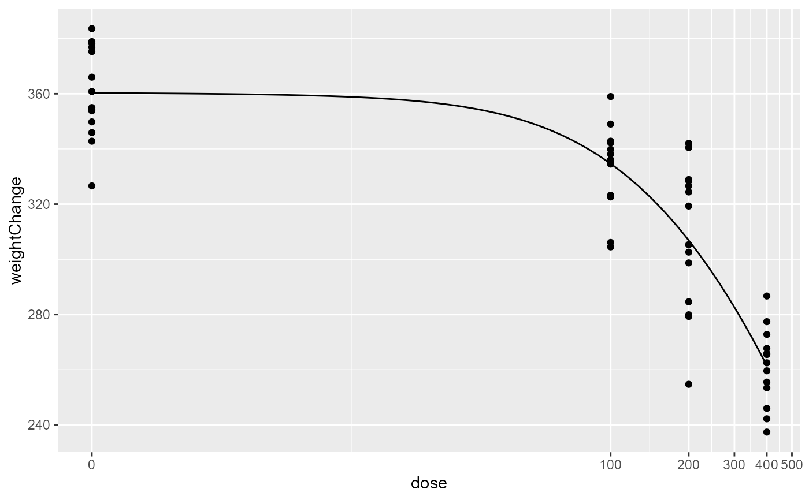

MACurve.RdComputing weighted average response estimates across multiple dose-response curves.
MACurve(x, modelList, modelWeights, stackingSeed = 1, stackingSplits = 2)a vector of dose values for which the weighted average of response estimates are to be computed
list of models of class drc
character string specifying the type of weights used, "AIC", "BIC" or "Stack", or a vector of the same length as the modelList with user defined weights
integer or NULL: Random seed to use in the data split in
the estimation of the Stacking Weights, when modelWeights = "Stack".
The global seed is reset to the initial value after estimation of the
weights, so this option does not interfere with a globally set seed.
integer or "LOO": When modelWeights = "Stack",
the Stacking Weights are estimated, which are based on V-fold
cross-validation. The stackingSplits argument sets the number V of data
splits used in the cross validation. The "LOO" (Leave one out) is a shortcut
to setting V equal to the number of observations in the data set.
numeric
The aim to provide an R package calculating the benchmark dose (BMD) and the lower limit of the corresponding 95% confidence interval (BMDL) for continuous and quantal dose-response data for a range of dose-response models based on the available definitions of the benchmark dose concepts.
Details on the implemented definitions and methods can be found in Crump (2002)
library(bmd)
library(drc)
library(drcData)
library(ggplot2)
# fit models to aconiazide data
aconiazide.LL.3 <- drm(weightChange ~ dose,data = aconiazide,fct = LL.3())
aconiazide.LN.3 <- drm(weightChange ~ dose,data = aconiazide,fct = LN.3())
aconiazide.W1.3 <- drm(weightChange ~ dose,data= aconiazide,fct = W1.3())
aconiazide.W2.3 <- drm(weightChange ~ dose,data= aconiazide,fct = W2.3())
# plot the MA curve
plot(aconiazide.LL.3, type = "obs")
curve(
MACurve(x, modelList = list(aconiazide.LL.3, aconiazide.LN.3,aconiazide.W1.3, aconiazide.W2.3),
modelWeights = "AIC"),
add = TRUE)
# or plot using ggplot2
qplotDrc(aconiazide.LL.3, type = "obs") +
geom_function(fun = function(x){
MACurve(x, modelList = list(aconiazide.LL.3, aconiazide.LN.3,
aconiazide.W1.3, aconiazide.W2.3),
modelWeights = "AIC")
})
